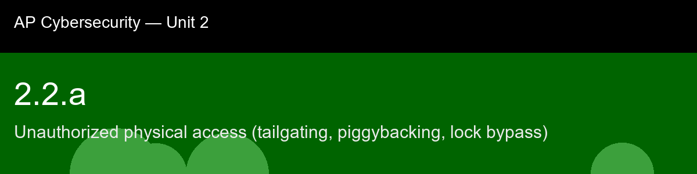

2.2.a, Unauthorized physical access (tailgating, piggybacking, lock bypass)
Before class today. Every cybersecurity textbook covers firewalls and encryption, but the most damaging breaches often begin with an attacker simply walking through the front door. Physical access controls, locked doors, badge readers, security checkpoints, are the first layer of defense for servers, wiring closets, and workstations.
The intuition to hold onto: Notice the throughline from Unit 1: tailgating works for the exact same psychological reason phishing works, it exploits the awkwardness of demanding verification from someone who seems legitimate. A locked door is a technical control, but the moment a human decides whether to hold it open, you're back in social-engineering territory, just wearing a badge instead of an email. That's why this skill belongs right after Unit 1 rather than off in its own silo: physical security and social engineering aren't two separate topics, they're the same vulnerability, human courtesy under mild social pressure, showing up in a different setting.
A myth worth busting before we start: "Tailgating only works in movies." → It is one of the most frequently reported physical-penetration vectors in professional red-team assessments; social courtesy is a real and exploitable vulnerability.
Today's goal: Identify tailgating, piggybacking, and lock-bypass techniques, explain how each circumvents physical access controls, and flag suspicious entry-log records that indicate an unauthorized access attempt.
Handout: pre-lecture-handout.docx.

## 2.2.a, Unauthorized physical access (tailgating, piggybacking, lock bypass)
**Before class today.** Every cybersecurity textbook covers firewalls and encryption, but the most damaging breaches often begin with an attacker simply walking through the front door. Physical access controls, locked doors, badge readers, security checkpoints, are the first layer of defense for servers, wiring closets, and workstations.
**The intuition to hold onto:** Notice the throughline from Unit 1: tailgating works for the exact same psychological reason phishing works, it exploits the awkwardness of demanding verification from someone who seems legitimate. A locked door is a technical control, but the moment a human decides whether to hold it open, you're back in social-engineering territory, just wearing a badge instead of an email. That's why this skill belongs right after Unit 1 rather than off in its own silo: physical security and social engineering aren't two separate topics, they're the same vulnerability, human courtesy under mild social pressure, showing up in a different setting.
**A myth worth busting before we start:** "Tailgating only works in movies." → It is one of the most frequently reported physical-penetration vectors in professional red-team assessments; social courtesy is a real and exploitable vulnerability.
**Today's goal:** Identify tailgating, piggybacking, and lock-bypass techniques, explain how each circumvents physical access controls, and flag suspicious entry-log records that indicate an unauthorized access attempt.
Handout: `pre-lecture-handout.docx`.